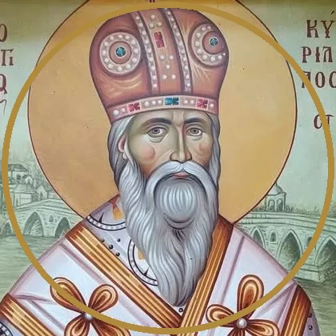
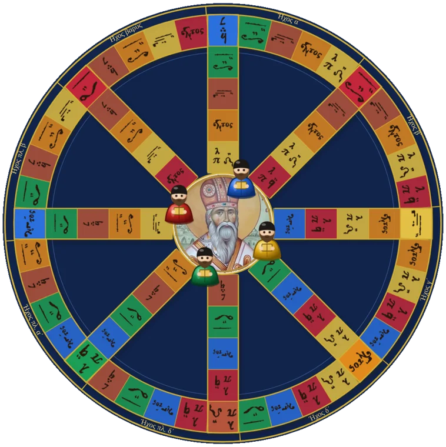

Ανεβείτε και κατεβείτε στον τροχό της Οκτωήχου με τα ζάρια των χαρακτήρων ποσότητας. Απαντήστε σε ερωτήσεις θεωρίας, ορθογραφίας, τυπικού, υμνολογίας, ιστορίας και αρμονικών, και γεμίστε το θυμιατό σας.

Πώς παίζεται
Ρίξτε τα ζάρια
Το μπλε ζάρι της ανάβασης και το κόκκινο της κατάβασης έχουν πάνω τους χαρακτήρες ποσότητας. Διαλέγετε ένα από τα δύο.
Απαντήστε
Κάθε θέση ανοίγει μια ερώτηση του πεδίου της. Σωστή απάντηση: «Άξιος!» και ξαναρίχνετε. Λάθος: ο λόγος περνά στον άλλο χορό.
Γεμίστε το θυμιατό
Στις θέσεις των ήχων κερδίζετε τα έξι χρώματα των πεδίων και δύο κομμάτια ελεύθερης επιλογής. Με γεμάτο θυμιατό, στο Ίσον για την τελική ερώτηση.
Μόνος, για εξάσκηση
Παίζετε με τον δικό σας ρυθμό. Σε κάθε λάθος βλέπετε τη σωστή απάντηση με εξήγηση και πηγή, και μπορείτε να ρωτήσετε τη Διδαχή για περισσότερα.
Με φίλους, από μακριά
Παίρνετε κωδικό και τον στέλνετε σε έως τρεις ψάλτες με Viber, WhatsApp ή email. Ο καθένας παίζει από τη δική του συσκευή.
Με τη φωνή της Διδαχής
Η Διδαχή διαβάζει τις ερωτήσεις και καθοδηγεί τους παίκτες, ενώ τα ηχητικά της Οκτωήχου συνοδεύουν το παιχνίδι.
Στη μνήμη του Αγίου Κυρίλλου ΣΤ΄
Ο Πατριάρχης Κύριλλος ΣΤ΄ στήριξε την Επιτροπή των τριών Διδασκάλων, Χρυσάνθου, Γρηγορίου και Χουρμουζίου, και θεσμοθέτησε τη Νέα Μέθοδο (1814). Με την εγκύκλιο της 25ης Νοεμβρίου 1815 ιδρύθηκε η Γ΄ Πατριαρχική Μουσική Σχολή. Μαρτύρησε στην Αδριανούπολη στις 18 Απριλίου 1821.
Κάθε σωστή απάντηση είναι ένας κόκκος θυμιάματος στη μνήμη του.
Εγκαταστήστε την εφαρμογή
Ανοίξτε το παιχνίδι και πατήστε ⚙ Ρυθμίσεις › Εγκατάσταση, ή «Προσθήκη στην αρχική οθόνη» στο κινητό. Σύντομα και στα Microsoft Store, Google Play και App Store.
Άνοιγμα του Κυριλλείου